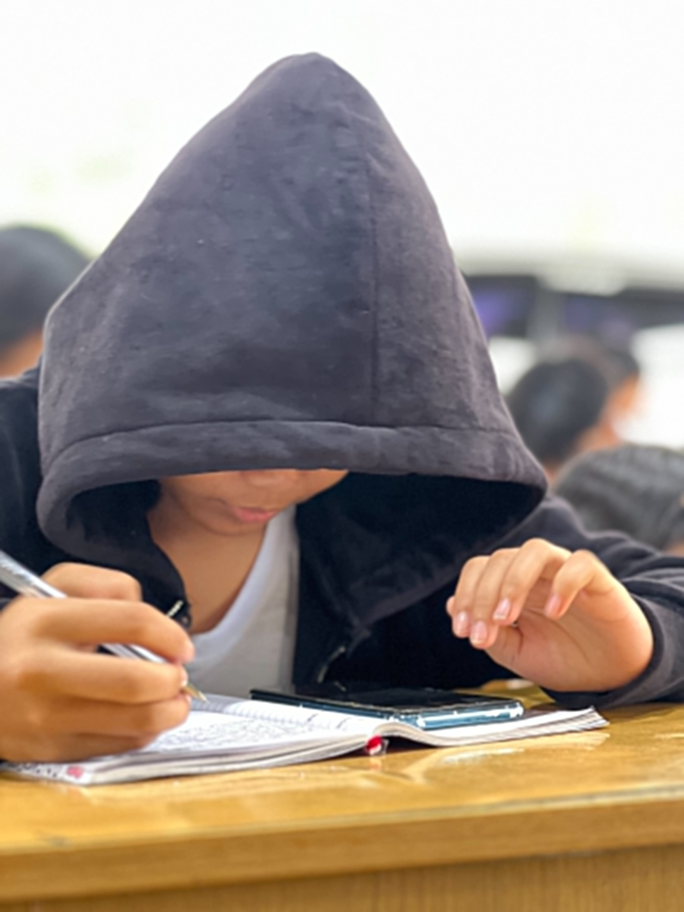

HELLO!
I’m Jessica Sojot.
I am a Grade 10 student from Balintocatoc Integrated School. I enjoy taking photographs of interesting places, school activities, nature, and simple moments around our campus.
I created this website to present the photographs I personally captured and the photography skills I learned while completing this project.
Personal Information
| Name | Jessica Sojot |
|---|---|
| Grade and Section | Grade 10 – Mercury |
| School | Balintocatoc Integrated School |
| Device Used | Smartphone Camera |
Skills Applied
Composition
Camera Angles
Natural Lighting
Focus
Cropping
Resizing
Color Adjustment
Adding Captions